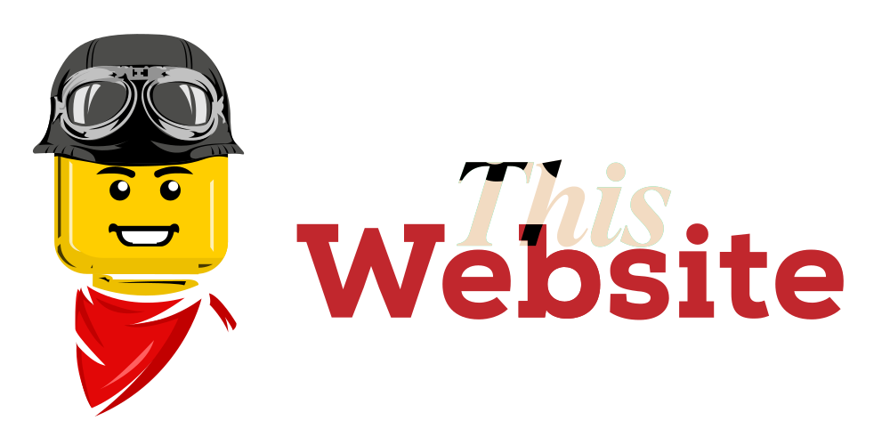

I'm Wallid — a certified industrial welder based in Canada, currently working as a journeyman fitter-welder in one of the country's most technically demanding shops: aerospace components, nuclear assemblies, hydroelectric structures, and heavy mining equipment fabrication.
I hold 5 CWB certifications and 2 AWS certifications, a Titre Professionnel Soudeur Industriel (France), and I'm finalizing my BAC PRO Chaudronnerie through a VAE process — completed remotely from Canada.
This blog exists because almost nobody in this trade documents their work publicly. No personal branding, no technical writing, no knowledge sharing beyond the shop floor. I'm changing that. Here you'll find real technical content written by someone who does this for a living — not generic tutorials scraped from textbooks.
Full background & certifications →Deep dives into welding processes, mining equipment fabrication, materials science, and the reality of working as a certified welder across multiple sectors. No fluff. No AI-generated filler. Field experience, documented.
Read the blog →